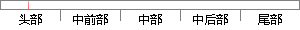

去中心化，核心功能齐全。
片段位置图

相似结果|
相似片段 1：单个功能核心的建构模式，以核心功能区位中心带动附属功能区的发展，以此促进贸易市场、生活配套等设施的建设。单核心功能建构应先依据园区的建设规模，按照一定比例计划各功能规模，将研发、管理、商业等功能模块
相似片段 2：与消费者个性化虚拟物流中心实质是一种企业的核心功能交换市场，企业在此实现非核心功能的外包。网络时代，整个工业界都面临着生产能力过剩问题，使得企业必须把经营的重点放在虚拟经营模式上，及时准确地反映消费者的需要
相似片段 3：，8.3城市次中心的主要功能特征与核心城市中心区相比，城市次中心在功能上有其自身的特点:8.3.1功能不齐全，结构简单城市次中心不是核心城市中心区的简单重复，追求的不是核心城市中心区的微缩效应，而是核心
相似片段 4：)(1) 游客接待中心(售票、导游服务等) 核心功能 约900(2) 餐饮 核心功能 约2500(3) 停车场(换乘) 核心功能 约2660入口服务区 (4) 文化活动中心(2层) 非核心功能 约2160
|
※ 片段修改建议 ※
近似词参考：- 中心：中间 中央
- 核心：焦点
- 齐全：齐备
系统自动生成语句：去中间化，焦点功能齐备。
注：本片段修改建议为系统自动生成，仅供参考。